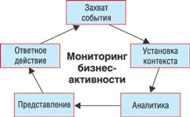
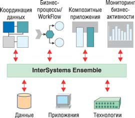
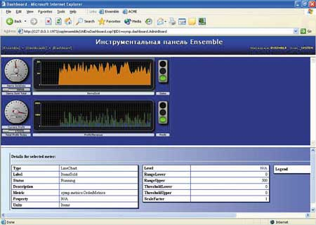

Вадим Федоров,
консультант InterSystems Corporation
vadim@intersystems.ru
Управлять компанией в режиме реального времени - сложная, но крайне важная для бизнеса задача. На предприятиях, которые эффективно управляются в режиме реального времени, постоянно отслеживаются все важные для бизнеса события, идентифицируются проблемы и новые возможности для развития бизнеса. От того, насколько оперативно сотрудники предприятия могут отреагировать на бизнес-события, во многом зависит эффективность работы компании.
Решение задачи мониторинга бизнес-активности позволяет в режиме реального времени отслеживать и обрабатывать важнейшие бизнес-события (новая сделка, изменение цепочки поставок, изменение законодательства, запрос на доработку информационной системы и т. д.). Информация обрабатывается и предоставляется пользователям, которые оперативно выполняют соответствующие ответные действия. Системы мониторинга способствует принятию быстрых, обоснованных и четких управленческих решений. Результат - конкурентные преимущества, которые получает предприятие.
Концепция мониторинга бизнес-активности (Business Activity Monitoring, BAM) была предложена аналитической компанией Gartner, которая определяет BAM как концепцию предоставления доступа в режиме реального времени к наиболее важным индикаторам производительности бизнеса с целью увеличения скорости и эффективности бизнес-операций.
Мониторинг бизнес-активности концентрируется на мониторинге, фильтрации и представлении событий. Типичный сценарий BAM упрощенно можно представить следующим образом: ПО оценивает происходящие на предприятии события, используя набор правил, которые определяют, как фильтровать события, каких пользователей и в каком формате уведомлять. Для решения задачи мониторинга бизнес-активности используется целый ряд смежных технологий: системы управления бизнес-процессами для получения информации о состоянии процессов и о событиях, происходящих в них, средства интеграции корпоративных приложений для доступа к разнообразным источникам данных и интегрированным приложениям, а также инструменты бизнес-аналитики (business intelligence) для анализа информации.
Мониторинг бизнес-событий тесно связан с интеграцией корпоративных приложений: для полноценного обеспечения такого мониторинга событий в реальном времени на крупном предприятии необходимо интегрировать все используемые информационные системы.
Платформа для интеграции и разработки InterSystems Ensemble в числе прочего позволяет создавать и решения для мониторинга бизнес-активности. С точки зрения интеграции корпоративных приложений BAM можно считать одной из задач интеграции, наряду с координацией данных, управлением бизнес-процессами и разработкой композитных приложений (это приложения, использующие функционал и данные интегрированных систем). InterSystems Ensemble в рамках одного продукта предоставляет средства для решения всех этих задач интеграции корпоративных приложений, что позволяет создавать на основе существующих приложений новые решения, повышающие эффективность бизнеса.
Влияние событий на бизнес и ИТ
Ключевое понятие мониторинга бизнес-активности - событие. Таким образом, прежде чем детально рассматривать концепцию BAM, необходимо подробно остановиться на событиях и управляемой событиями архитектуре.
События все больше влияют на функционирование предприятий. "Событийный" подход в бизнесе и ИТ в ближайшее время будет стремительно набирать популярность, так как он обеспечивает поддержку динамических сложных бизнес-процессов. Управляемые событиями бизнес-процессы отражают процессы реального мира, в которых события играют важную роль.
Понятие "событие" описывает, например, коммерческую сделку, окончание института или нажатие клавиши клавиатуры компьютера. Событие может, в свою очередь, включать в себя другие события, однако, как правило, не имеет смысла анализировать их на более детализированном уровне. События не бывают мгновенными, они представляют собой результат выполнения процессов. Например, окончание института - результат выполнявшегося определенное время процесса.
Некоторые предприятия уже используют управляемые событиями бизнес-процессы. Например, в ряде авиакомпаний события служат для реализации "событийной" стратегии управления стоимостью билетов. В рамках данной стратегии цена билета постоянно регулируется в соответствии со спросом на билеты на конкретный рейс и на конкретную дату. Такой подход позволяет увеличить прибыль, повышая цену билета, если спрос велик, и понижая ее для увеличения спроса, если заказов мало. Для реализации подобной стратегии требуется специальное ПО, которое отслеживает события, касающиеся продажи билетов на каждый рейс и на каждую дату. Руководство компании, сотрудники отделов по продаже билетов могут получать информацию на специальных инструментальных панелях (dashboards), которые постоянно обновляются, обеспечивая сотрудникам актуальную информацию о продаже билетов. Это позволяет оперативно реагировать на потенциальные проблемы и уделять большее внимание тем событиям, которые невозможно просчитать заранее. Управляемые событиями бизнес-процессы "реагируют" на происходящие события. Возникающие проблемы обнаруживаются раньше, чем в обычных системах, следовательно, сотрудники могут оперативно предпринять соответствующие действия.
Стратегия бизнеса, ориентированная на события, часто подразумевает сокращение времени выполнения бизнес-процесса. Например, производство продукции в соответствии с заказами клиентов целесообразно, если время производства измеряется часами, а не днями. События позволяют обеспечить гибкость экземпляров - каждый экземпляр бизнес-процесса рассматривается индивидуально (например, каждый автомобиль окрашивается в свой цвет) - и гибкость процессов - процесс изменяется в ответ на запросы потребителей (например, линия сборки автомобилей перенастраивается для производства мини-вэнов вместо седанов).
Набирающие популярность управляемые событиями бизнес-процессы сегодня все сильнее влияют на информационные технологии. Многие аспекты ориентированной на события стратегии бизнеса могут быть реализованы, только если приложения также ориентированы на события. Иными словами, управляемые событиями бизнес-процессы требуют управляемых событиями приложений. Но традиционная архитектура статична и недостаточно гибка для реализации активного поведения, которое требуется для автоматизации ориентированных на события бизнес-процессов. Управляемые событиями приложения позволяют быстро модифицировать процессы и обрабатывать ошибки и исключительные ситуации, которые "разрушили" бы традиционные процессы. Аналитическая компания Gartner предлагает для создания таких приложений управляемую событиями архитектуру (Event Driven Architecture), которая позволяет наилучшим образом обрабатывать события. Самый яркий пример приложений, основанных на управляемой событиями архитектуре, - системы для мониторинга бизнес-активности (BAM).
Развитие систем BAM
Несмотря на то, что технология BAM появилась всего несколько лет назад, в своем развитии она уже прошла несколько этапов.
Первое поколение систем мониторинга бизнес-активности обеспечивает "захват" бизнес-событий, обрабатывает эти события и предоставляет информацию пользователям на специальных инструментальных панелях. Бизнес-события извлекаются из различных приложений и источников данных, фильтруются, объединяются со связанной информацией и преобразуются, формируя информацию для пользователей. Как правило, для создания пользовательского интерфейса систем BAM используются портальные технологии, поддерживающие создание персонифицированных интерфейсов. Руководители компании и ответственные за бизнес-процессы получают доступ к инструментальным панелям, на которых располагаются графические компоненты, облегчающие восприятие информации (диаграммы, графики, отчеты). Кроме того, для информирования пользователей используются такие каналы, как электронная почта, мобильная связь и т. д.
В качестве примера рассмотрим реализацию задачи мониторинга бизнес-активности в крупной медицинской лаборатории, которая специализируется на проведении длительных и сложных тестов. Информация о результатах обработки тестов должна быть предоставлена врачам и пациентам. Изменения статуса медицинских тестов отображаются на инструментальных панелях портального приложения и рассылаются по электронной почте врачам и пациентам. Для решения этой задачи необходимо отслеживать события в многочисленных медицинских приложениях. События - изменения статуса тестов - обрабатываются, дополняются необходимыми данными, и информация предоставляется заинтересованным пользователям. Кроме того, информация о событиях доступна и другим приложениям, например, через Web-сервисы.
Следующий этап развития BAM дает пользователям возможность не только получать информацию о событиях на предприятии, но и предпринимать на основании полученной информации ответные действия, влияющие на работу предприятия. От системы требуется не только предоставить информацию о бизнес-событиях с помощью электронной почты или инструментальных панелей в корпоративном портале (что, естественно, помогает пользователю), но и обеспечить возможность немедленно повлиять на протекающие на предприятии процессы. В противном случае пользователи будут получать огромное количество информации, которую они просто не успеют обработать, а следовательно, будут вынуждены ее игнорировать. Инструментальные панели и уведомления помогают принимать решения, но затем пользователи должны действовать вне системы мониторинга бизнес-активности (например, звонить по телефону, посылать письма по электронной почте, работать с внешней системой). Во внешней системе контекст бизнес-события может потеряться, и пользователю не всегда просто осуществить ответные действия в нескольких системах в соответствии с полученной информацией.
Таким образом, возможность ответного действия добавляет возможность обрабатывать большую часть ситуаций в режиме реального времени, значительно повышая эффективность работы сотрудников.
В качестве примера можно привести решение мониторинга бизнес-активности в телекоммуникационной компании, задача которого - автоматизировать процесс обработки заказов. Пользователи составляли заказы таким образом, что возникало большое количество исключительных ситуаций, которые требовалось обрабатывать вручную, что приводило к увеличению издержек. Мониторинг бизнес-активности позволил идентифицировать заказы, которые могли привести к исключительным ситуациям. Когда обнаруживалось такое исключение, автоматически запускался бизнес-процесс дополнительной обработки заказов, в частности, происходил поиск информации в базе знаний по решению исключительных ситуаций. И только те исключения, которые не удавалось исправить автоматически, направлялись к ответственным менеджерам, что привело к существенному снижению расходов на обработку заказов и удовлетворению клиентов.
Дальнейший уровень развития - это предсказывающий и адаптивный мониторинг бизнес-активности, с помощью которого пользователю предоставляется информация с несколькими возможными вариантами ответных действий, что позволяет оптимизировать бизнес-процессы в реальном времени. Например, вместо простого уведомления о том, что запасы товара снизились, пользователь получает от системы BAM информацию о том, что запасы малы, так как среднее количество заказов увеличилось в последние три недели на 50%. В соответствии с этой тенденцией и ситуацией в других регионах система рекомендует перенести товары со склада в регионе А в регион Б.
Для того чтобы обеспечить такой уровень мониторинга бизнес-активности, пользователям нужно предоставить возможность получать детализированную информацию, связанную с бизнес-событиями, анализировать тенденции и оценивать различные варианты развития событий. Если система BAM использует мощный математический аппарат, то появляется возможность адаптировать алгоритмы, обучаясь по мере обработки бизнес-событий, происходящих в режиме реального времени. Подобные системы мониторинга бизнес-активности применимы, например, в системах управления рисками.
Ключевые элементы BAM
В мониторинге бизнес-активности можно выделить следующие этапы: захват события, установка контекста, аналитика в реальном времени, представление информации и ответные действия (рис. 1). Рассмотрим эти этапы подробнее.
|  | Рис. 1. Этапы мониторинга бизнес-активности.
|
Первый этап - захват события. В рамках BAM осуществляется мониторинг процессов, автоматизированных каким-либо приложением или средством управления бизнес-процессами, и захватываются интересующие события. Более открытые системы мониторинга бизнес-активности позволяют захватывать события в любой информационной системе предприятия и в разнообразных источниках данных (корпоративные хранилища данных, системы контрагентов, Web-сервисы в Интернете и т. д.).
Как только события захвачены, необходимо предоставить для них контекст, чтобы эти события можно было анализировать. Для мониторинга бизнес-активности может потребоваться дополнительная информация. Например, если захвачено такое бизнес-событие, как новая сделка, может потребоваться дополнительная информация о клиенте, связанных заказах этого продукта, уровне запасов и т. д. Контекст может поступить как из исторических данных, так и из оперативного источника в режиме реального времени, так что при мониторинге бизнес-активности требуется получать связанную информацию без задержки.
Основной этап мониторинга бизнес-активности - аналитика в реальном времени. Бизнес-события анализируются, устанавливается связь между ними, применяются правила для получения ключевых показателей производительности (key performance indicators, KPI). Аналитика в режиме реального времени часто сочетается с анализом исторических данных, включая доступ к хранилищам данных. На данном этапе формируется очищенная информация, которая будет передана заинтересованному пользователю или системе для дальнейшей обработки.
Мониторинг бизнес-активности обеспечивает также представление информации. Как правило, используются несколько каналов уведомления пользователей, которые могут получать информацию в виде писем электронной почты, на портальных приложениях и беспроводных устройствах. Ведущие решения позволяют представить ключевые показатели производительности и другую информацию о событиях в персонифицированных порталах, на инструментальных панелях, построенных с использованием графических компонентов (диаграммы, графики, отчеты). Подобные порталы обычно обеспечивают пользователям и средства принятия решений в ответ на события. Кроме того, системы мониторинга бизнес-активности часто включают средства интеграции с ведущими средствами бизнес-аналитики и построения отчетов, чтобы обеспечить представление детализированной информации.
Заключительный этап мониторинга бизнес-активности - ответные действия. Для того чтобы пользователи могли отреагировать на полученную информацию о бизнес-событии в режиме реального времени, им нужна возможность оперативно запускать бизнес-процессы. Эти процессы могут управлять взаимодействием с внешними приложениями и другими пользователями. Ответные действия порождают новые события, которые, в свою очередь, отслеживаются и обрабатываются в рамках решения задачи BAM.
Для того чтобы эффективно решать задачи мониторинга бизнес-активности, необходимы следующие компоненты:
- средства интеграции корпоративных приложений (Enterprise Application Integration) для захвата событий в любом приложении и источнике данных на предприятии;
- системы интеграции корпоративной информации (Enterprise Information Integration) для извлечения контекста событий из разнообразных источников данных;
- аналитические средства для анализа событий и исторических данных в реальном времени;
- портальные решения для представления информации пользователям;
- системы управления бизнес-процессами, посредством которых, используя полученную информацию, можно влиять на выполнение бизнес-процессов на предприятии.
Если взглянуть на интеграцию корпоративных приложений более широко, то окажется, что в современных платформах для интеграции и разработки композитных приложений в той или иной степени присутствуют все перечисленные выше компоненты. Хотя задачи BAM могут решаться и вне рамок интеграции, мониторинг бизнес-активности все чаще рассматривается как задача интеграции корпоративных приложений. В данной статье мы рассматриваем мониторинг бизнес-активности как одну из задач интеграции корпоративных приложений, наряду с координацией данных, управлением бизнес-процессами и разработкой композитных приложений.
Мониторинг бизнес-активности тесно связан с другими задачами интеграции. Решение задачи координации данных позволяет захватывать бизнес-события в интегрированных приложениях и источниках данных на предприятии. В рамках разработки композитных приложений часто создаются портальные решения, используемые в том числе для представления получаемой при мониторинге бизнес-активности информации пользователям. Мониторинг бизнес-активности связан и с управлением бизнес-процессами. Во-первых, BAM позволяет собрать информацию, необходимую для оптимизации бизнес-процессов. Во-вторых, благодаря ему появляется возможность влиять на бизнес-процессы, используя получаемую оперативную информацию.
Таким образом, на интеграционной платформе проекты создания решений для мониторинга бизнес-активности можно выполнить гораздо быстрее и эффективнее, чем при использовании разрозненного набора инструментальных средств.
InterSystems Ensemble и мониторинг бизнес-активности
InterSystems Ensemble - единственная платформа интеграции приложений, которая объединяет в целостном продукте функциональность сервера интеграции, сервера приложений, высокопроизводительную объектную базу данных и интегрированную среду разработки и управления (рис. 2). Такое объединение технологий обеспечивает эффективное решение основных задач интеграции корпоративных приложений: координации данных, управления бизнес-процессами, разработки композитных приложений и мониторинга бизнес-активности.
|  | Рис. 2. Интеграционная платформа InterSystems Ensemble.
|
При создании решений BAM на основе интеграционной платформы InterSystems Ensemble используются следующие компоненты Ensemble.
Полнофункциональная среда интеграции и разработки обеспечивает быструю разработку композитных приложений, интеграционных адаптеров, бизнес-процессов, а также компонентов Ensemble, предназначенных для решения задач мониторинга бизнес-активности: бизнес-метрик и инструментальных панелей.
Универсальная архитектура сервисов обеспечивает унифицированный объектный доступ к широкому спектру ресурсов (приложения, источники данных), подключенных к Ensemble через адаптеры. В Ensemble работа со всеми разнообразными интегрированными ресурсами существенно облегчается, так как они доступны аналитикам и интеграторам в виде согласованного набора классов. Универсальная архитектура сервисов значительно облегчает захват бизнес-событий в интегрированных приложениях.
Хранилище - высокопроизводительная объектная база данных, предназначенная для хранения метаданных, сообщений, состояний бизнес-процессов, данных композитных приложений. Хранилище данных - один из основных источников информации о бизнес-событиях.
Средства управления - портал управления Ensemble, Web-приложение, обеспечивающее мониторинг и администрирование интеграционных решений.
Рассмотрим основные возможности InterSystems Ensemble в создании решений для мониторинга бизнес-активности.
В хранилище Ensemble содержатся все сообщения, которыми обмениваются Ensemble и интегрированные системы. В сообщениях отражается информация о бизнес-событиях. Каждый тип сообщения - это класс Ensemble, каждое сообщение - экземпляр соответствующего класса. Хранение сообщений не только обеспечивает высокую производительность и надежность интеграционного решения, но и позволяет реализовать практически любой сценарий обработки бизнес-событий. Хранилище предоставляет реляционный и объектный интерфейс к сообщениям Ensemble, в результате чего можно использовать для анализа бизнес-событий любые средства создания аналитических приложений (OLAP, data mining).
Кроме того, InterSystems Ensemble предоставляет собственные средства для создания приложений BAM. Бизнес-события отслеживаются и обрабатываются с помощью специальных компонентов InterSystems Ensemble - сервисов бизнес-метрик. Последние собирают информацию, необходимую для того, чтобы вычислить значение ключевых показателей эффективности (KPI) предприятия. В классе сервиса бизнес-метрик в Ensemble задается набор бизнес-метрик, которые соответствуют определенным KPI.
Класс сервиса бизнес-метрик через заданный администратором интервал времени запускает процесс вычисления бизнес-метрик. Для вычисления их значений Ensemble может обращаться к интегрированным приложениям, запрашивать данные из внешних баз данных, получать данные из собственного хранилища (в нем содержится информация о метаданных, сообщениях, состоянии бизнес-процессов) и запускать любой другой код Ensemble (например, математический алгоритм, который вычислит значения бизнес-метрик по заданным входным данным).
Вычисленные значения бизнес-метрик сохраняются в хранилище Ensemble и могут использоваться для формирования информации о бизнес-событиях для пользователей.
Хранилище Ensemble обеспечивает быстрый конкурентный доступ к значениям бизнес-метрик без необходимости их повторного вычисления (повторное вычисление бизнес-метрик происходит независимо от обращений через заданные администратором интервалы времени).
Для того чтобы пользователи могли осуществлять мониторинг бизнес-активности, необходимо создать специализированный пользовательский интерфейс, содержащий инструментальные панели (dashboards), на которых в режиме реального времени отображается подготовленная информация о бизнес-событиях. Пользовательский интерфейс можно создавать с помощью любого современного средства разработки. Ensemble предоставляет объектный и реляционный доступ к значениям бизнес-метрик из приложений Java, .NET, C++ и т. д. В Ensemble также можно создать Web-сервис, который будет возвращать значения запрашиваемых бизнес-метрик.
Ensemble предоставляет и свои собственные средства для создания инструментальных панелей. В частности, можно создавать Web-страницы, на которых в режиме реального времени будут отображаться значения бизнес-метрик. В состав Ensemble входит набор графических компонентов, которые обеспечивают быстрое создание инструментальных панелей. Инструментальные панели Ensemble (рис. 3) основаны на технологии SVG (Structured Vector Graphics) и не требуют дополнительных Java- или ActiveX-компонентов.
|  |
| Рис. 3. Инструментальная панель (dashboard) Ensemble.
|
Инструментальные панели Ensemble могут быть встроены в портал управления Ensemble, предназначенный для администрирования и мониторинга интеграционного решения, и в любое композитное приложение, с которым работают пользователи.
Ensemble обеспечивает не только отображение информации на инструментальных панелях, но и позволяет при захвате определенного события автоматически или по сигналу пользователя, получившего сообщение об этом событии, выполнить заранее заданное действие. Это может быть как отправка уведомления сотрудникам с помощью SMS или по электронной почте, так и более сложное действие - например, бизнес-процесс Ensemble, который, в свою очередь, обратится к интегрированным системам и/или запустит другие бизнес-процессы.
На базе InterSystems Ensemble можно создавать сложные адаптивные системы мониторинга бизнес-активности, с помощью которых пользователи, получив некую информацию, могут влиять на выполнение бизнес-процессов в организации.
Заключение
Мониторинг бизнес-активности тесно связан с такими задачами интеграции корпоративных приложений, как координация данных, управление бизнес-процессами и разработка композитных приложений. В настоящее время мониторинг бизнес-активности может рассматриваться как одна из задач интеграции корпоративных приложений.
Ensemble предоставляет все возможности для создания систем мониторинга бизнес-активности. Вместе с тем с помощью InterSystems Ensemble решаются и другие задачи интеграции корпоративных приложений. Решение основных задач интеграции с помощью единого продукта - платформы для интеграции и разработки композитных приложений InterSystems Ensemble позволяет быстро выполнять интеграционные проекты любой сложности и создавать новые эффективные бизнес-решения.
Источники дополнительной информации
|